Attitudes Towards Affectivity and Sexuality of People with Intellectual Disability
Daniela G. Franco, Jorge Cardoso, Isabel Neto
Abstract
The acceptance of sexuality and its manifestations has changed in recent decades to being considered a normal feature of the identity of each individual. However, the person with intellectual disability have not benefited from this change in attitude. Their sexuality remains shrouded in myths and prejudices. The study population consisted of 454 students from the University of Beira Interior, from the Medicine, Psychology and Architecture majors. The data was collected using a questionnaire specifically drafted for this research. Most surveyed students consider sexuality an important part of life for every human being. From the responses to the questionnaire, psychology students were those with a more positive attitude towards sexuality and affectivity of the individual with intellectual disability, but the variability of the distribution of student responses from the three majors did not differ significantly. A positive attitude is characteristic of those who have acquired sufficient knowledge, females and of those who have frequent contact with individuals with intellectual disability.
Keywords Sexuality, Intellectual, Disability, Attitudes, Affectivity, Portugal
Introduction
Sexuality is an attribute of every human being; it is not something a person has, it is a characteristic that is built according to laws, customs, rules and changes in time and space.
The concept of sexuality has long been closely related with the genital aspects, and its expression related only to marriage, regulated by moral and religious precepts.
Carrera [1] says that thanks to social and cultural revolutions that have occurred over the twentieth century, sexuality is no longer understood as merely biological, but became inseparable from the basic identity of a person.
Despite the fact that expressions of sexuality have become more accepted in the general population, when it comes to the individual with intellectual disability this issue still finds resistance. "Their sexuality is a victim of different reactions in a society with low tolerance to differences and surrounded by controversy, myths, beliefs and preju- dices" [2].
The understanding of their disability as an intellectual limitation, which generates changes in the development of emotional and social maturity keeps the individual with intellectual disability in a child-like status [2]. They are seen by most people as being sexless [3–5] and by others as being sexually primitive, wild and incomplete [6, 7] whose emotional and sexual fulfillment should be denied.
Adolescents with intellectual disabilities have the same problems as other young people, most of which have a normal development of physical and psychological characteristics. Any socially inappropriate sexual behavior is not due to the disability itself but to a non- existent sex education [8].
Felix and Marques [9] argue that "if we ban the opportunity of the population with disability from expressing their sexuality, we are preventing satisfying basic needs for their growth and development as individuals".
Health professionals take a more tolerant attitude towards the fundamental rights of citizens with disabilities when they are stated as general principles. However, everything becomes more complex when the person with disability makes more specific and objective requirements [10]. The WHO acknowledges that "the attitudes of health professionals can be a major obstacle to their role as educators and counselors on the topic of sexuality." [11]
In a 1993 study, which evaluated the degree of knowledge about sexuality among medical and engineering, students found that both had similar levels of knowledge [12]. This finding emphasizes the need to carry out further studies on the attitudes and behaviors of the general population or specific groups, such as medical students or psychology professionals and health care and education providers who, as citizens and leading figures in life of the individual with intellectual disability, have a duty to understand, accept and promote their welfare and, thus, their right to sexuality.
The purpose of this study involves assessing the attitudes of medical and psychology students about affectivity and sexuality of young people with intellectual disabilities.
To this end it is proposed to:
- evaluate whether the sex of the respondent or the frequency of their contact with people with intellectual disability influences their attitude towards their sexuality and affection;
- assess how the academic skills and knowledge acquired over medical and psychology courses influence attitudes towards sexuality and affectivity of the individual with intellectual disability;
- evaluate whether students who choose an academic course of medicine and psychology already have a more positive attitude in what concerns affectivity and sexuality of young people with intellectual disabilities.
Materials and Methods
This comparative study [13–16], is aimed at medicine, psychology and architecture students of Universidad da Beira Interior (University of Beira Interior—UBI). Medicine and psychology students have, as future health professionals, a strong position to deal with human beings as a whole and, as such, do not neglect their sexuality. Therefore, an assessment of their attitudes towards this issue and the understanding of how their education was crucial to this process is of utmost importance. Architecture students were picked as a control group, since those choosing a majors on medicine and psychology have, from the outset, a more positive attitude than those who did not make this choice.
A questionnaire was used to collect information with 22 items originally drafted for the present study. The present work had as starting point two other scales already used in other works: one devised by Dr. Antonio Martins, Psychologist, graduated from the Faculty of Psychology and Educational Sciences, University of Lisbon, in its original version with 17 questions [10]; and another developed and used by Dr. Maria de Lurdes Pereira Ramos, in her master thesis entitled "Sexuality in Diversity—attitudes of parents and coaches face the Affectivity and Sexuality in Young with intellectual disability" [17]. The Likert Scale response options were: strongly disagree, disagree, neither agree or disagree, agree, and strongly agree [18] (Annexes 1 and 2). As for the variables, we considered the attitudes to affection and sexuality of the person with intellectual disability as the dependent variable and the variables of gender, knowledge acquired (measured by year curriculum for medical students and by now they must have not attended "Introduction to Psychology of Human Sexuality "(IPSH) for Psychology) course and frequent contact with individuals with intellectual disability (> 29 x per month), as independent. It should also be noted that when applying the questionnaire respondents were asked to take into account only the mild to moderate intellectual disabilities to facilitate and standardize the evaluation of their attitudes.
In this study, a subject that accepts the person with intellectual disability as a sexual being with same right to express sexuality is considered positive (or liberal). On the other hand, a subject that does not accept it is considered negative (or a conservative).
Statistical Methods
Statistical analysis was performed using the SPSS 17.0® for Microsoft Windows®.
The tests used were:
- Fisher's exact test
- Kruskal–Wallis test
- Fridman test
- Method of multiple comparison of means of orders
Results
Questionnaires were obtained with the cooperation of 454 UBI students from the previ- ously mentioned departments. From the medical school, of a group of 159 students in first year and 140 in sixth, a sample, respectively, of 152 and 114 students was obtained. Of the 189 psychology and 343 architecture students, 109 and 78 pupils, respectively, answered the questionnaires (Table 1).
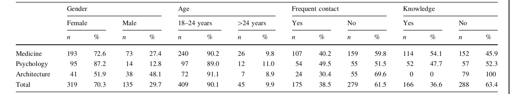
Table 2 shows that for the variable "Year Course," statistical significance was achieved in questions 3, 5–8, 10–12 and 21. When asked, medical students displayed an indisputably positive attitude with regards to the difficulty of approaching the topic of sexuality, the right of the individuals with intellectual disability to have sexual and emotional life and the importance of sex education for these individuals (questions 3, 7, 8 and 21, respectively).
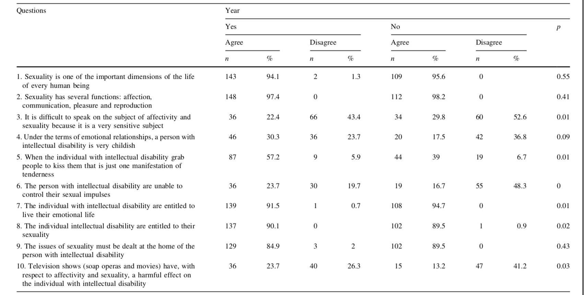
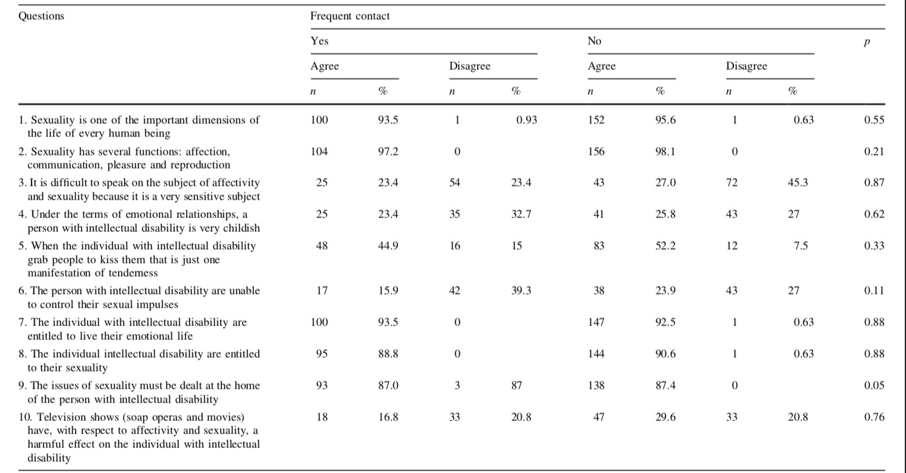
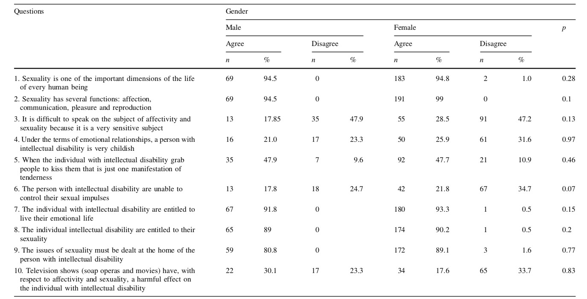
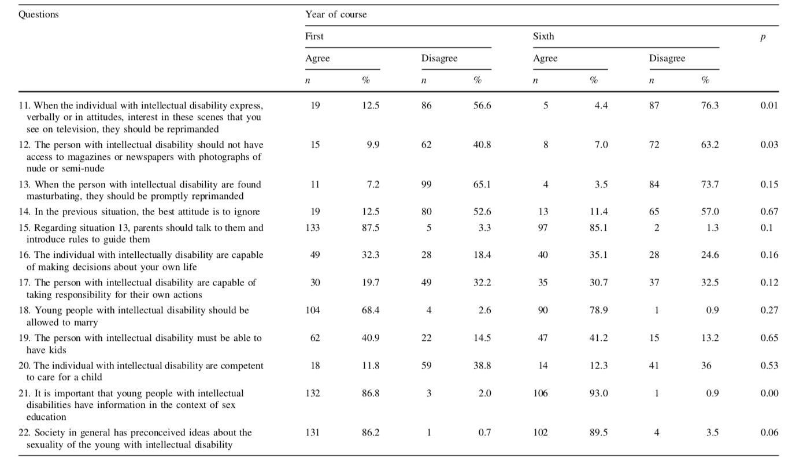
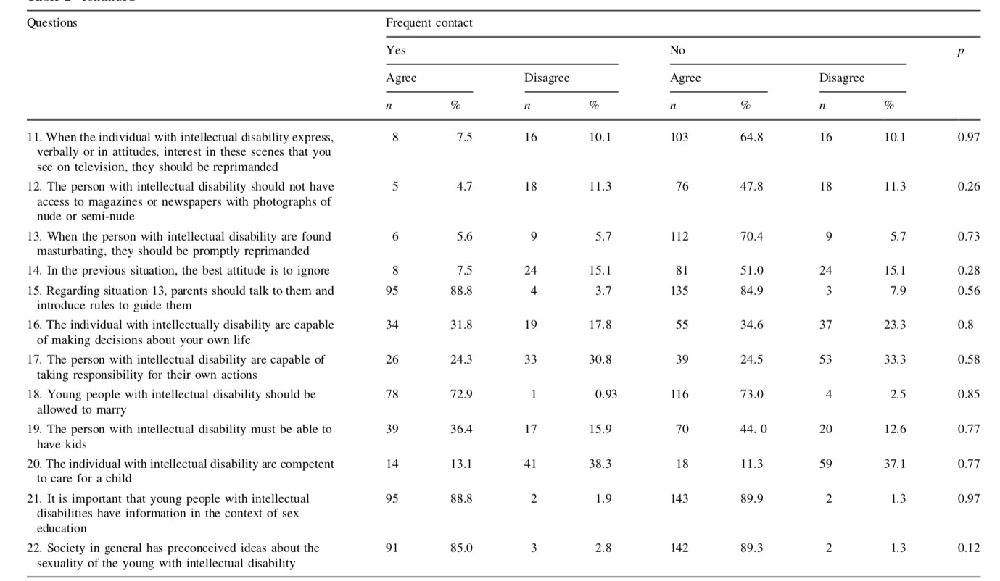
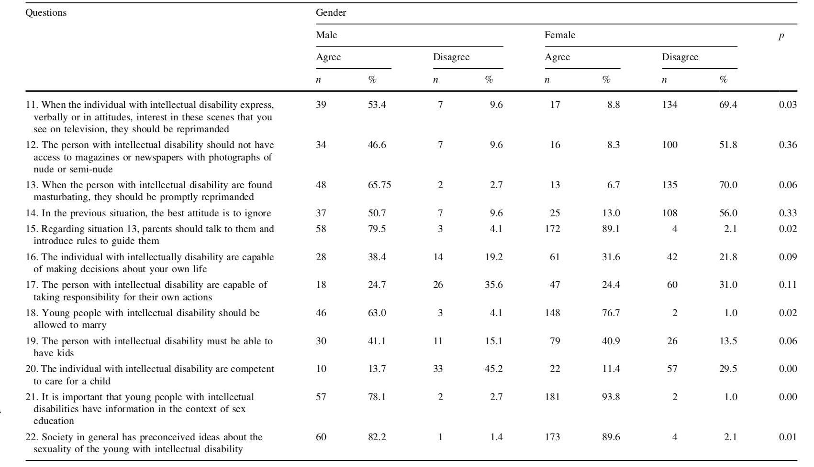
However, on issues that reflect more specific behavior in the theme of sexuality (questions 11 and 12), the attitude demonstrated by the sixth-year students was more positive than those of the first-year. In question 11, 76.3% of 6th year students disagreed with the statement while only 56.6% attending 1st year followed suit. And in question 12, the former group is 63.2% while the latter is 40.8%. Question 6, in which the problem of the capacity of the persons with intellectual disability to control their impulses was approached; there is a disagreement between the two groups. While 48.3% of sixth-year students think that they are capable of doing so, only 19.7% of first-year students agree.
In the same table, for the variable "gender", statistical significance was achieved in questions 11, 15, 18, 20 and 21. When asked if youth with intellectual disabilities should be allowed to marry, 41.1% of male students and 40.9% females agreed. However, when questioned about their competence to care for a child, attitudes become more negative with only 13.7% of men and 11.4% of women agreeing with this statement.
In Table 3, for the variable "It must attended or not discipline IPSH" significance was obtained in questions 2, 4, 5, 11, 19 and 21.
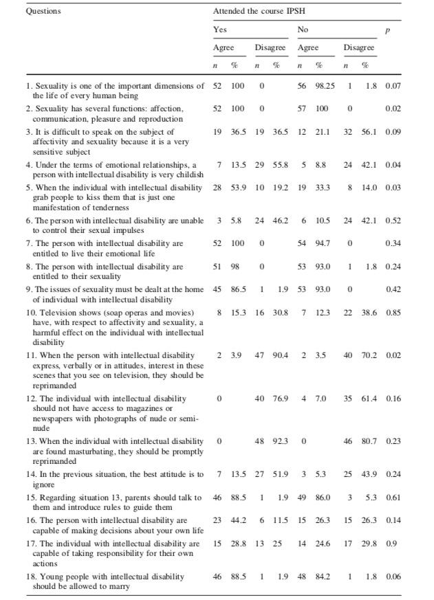
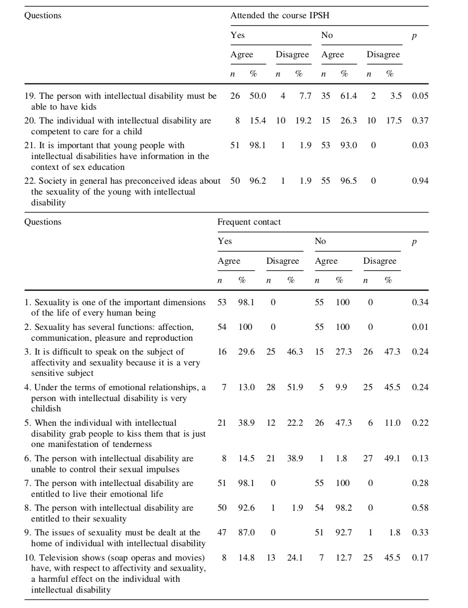
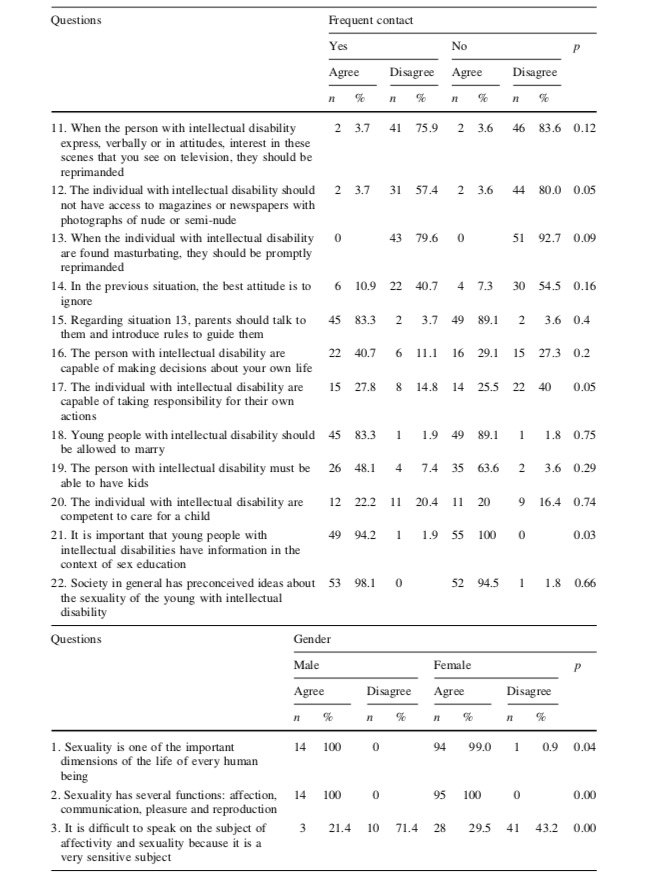
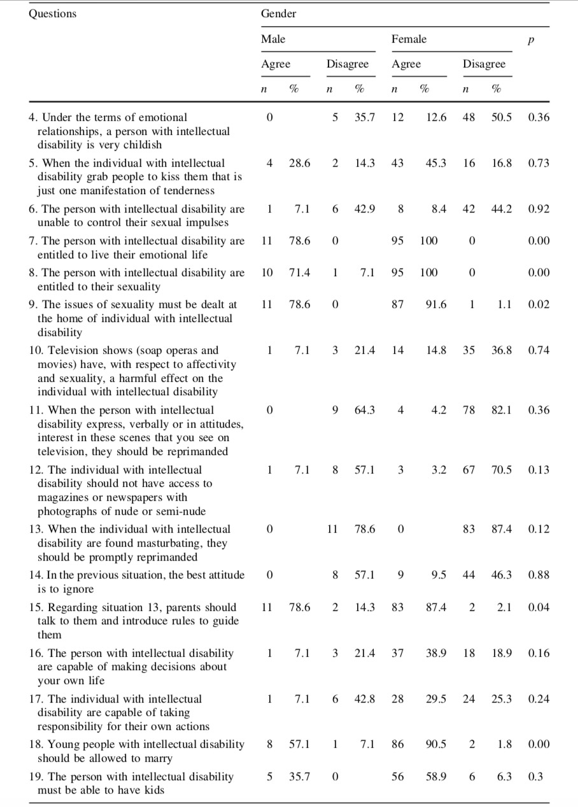
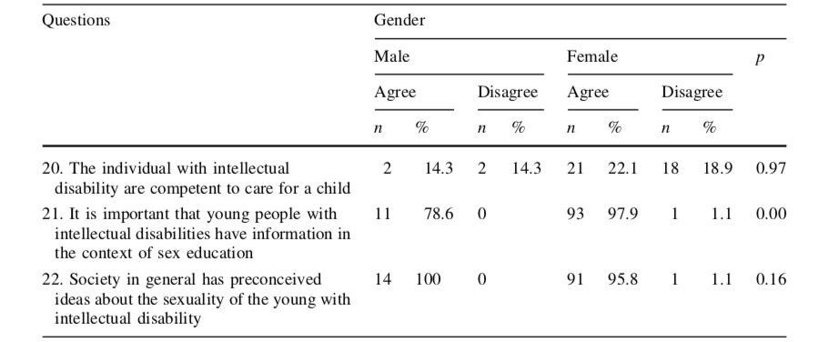
By questioning the psychology students if they recognize the various roles of sex- uality (question 2), both student groups, who have attended the course referred to be able to do so and those who have not, appeared to be unanimous in showing a positive attitude. And in both groups, although with some percentage differences between their responses, show a positive attitude when asked about the emotional immaturity of the individual with intellectual disability on the possibility of them having children, or about the importance of sex education for these individuals (issues 4, 19 and 21, respectively).
In the same table for the variable "Frequent contact with intellectual disability,"" there was statistical significance in questions 2, 12, 17 and 21. From questions 2 and 21, about the general topic of sexuality, resulted that students from both groups (with and without frequent contact with people with intellectual disability) are unanimous in expressing their agreement with the statements.
In question 12, when asked whether the person with intellectual disability should not have access to photographs of nude or seminude, 80% of those who have frequent contact with persons with intellectual disability individuals disagree with this statement while only 57.4% of those who do not have such contact agreed. For question 17 there is an inverse relationship, since when asked if the individual with intellectual disability are able to take responsibility for their actions, only 14.8% of people living with individuals with intellectual disability often disagree with this assertion, while the value raises up to 40% for those without this coexistence.
Finally, for the variable "gender", statistical significance was achieved in questions 1–3, 7–9, 15, 18 and 21. When asked about the importance of sexuality in the life of every human being and about their different functions (questions 1 and 2, respectively), both female and male students were unanimous in taking a positive attitude. However, there were significant percentage differences between gender, with women showing a more positive attitude, when asked about their right to emotional and sexual life (questions 7 and 8), the approach to the issue of sexuality at home to the individual with intellectual disability (question 9), the possibility of marriage (question 18) and the importance of sex education for these individuals (question 21). A more positive attitude in males was seen in the third question in which we asked students about the difficulty resulting from discussing sexuality.
In Table 4 the distributions of the average of responses from medical and psychology students was compared by applying the Mann–Whitney's test. In Medical School it was found that for the variable "year curriculum", students in the sixth year had a much more positive attitude towards people with intellectual disability than pupils from first grade to the questions 4–7, 12, 21 and 22.
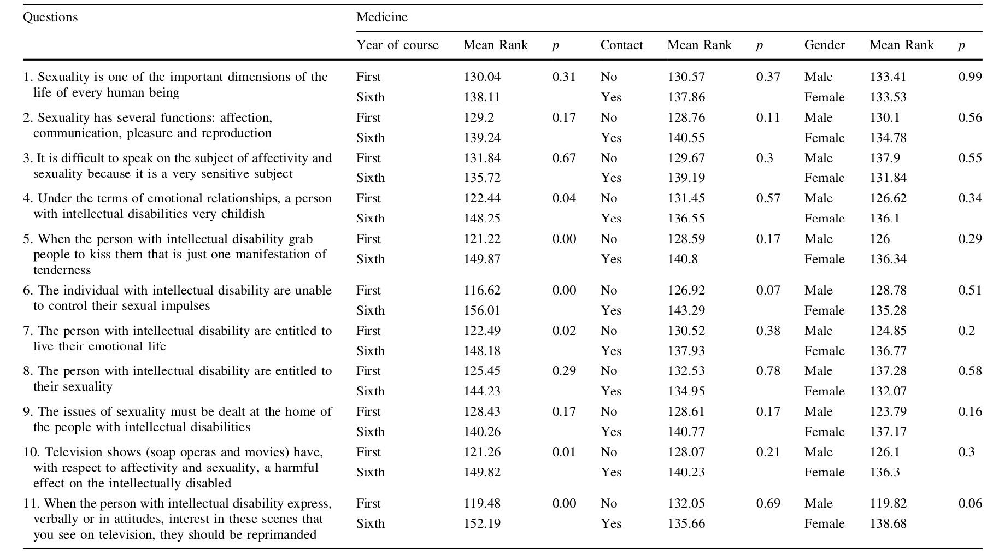
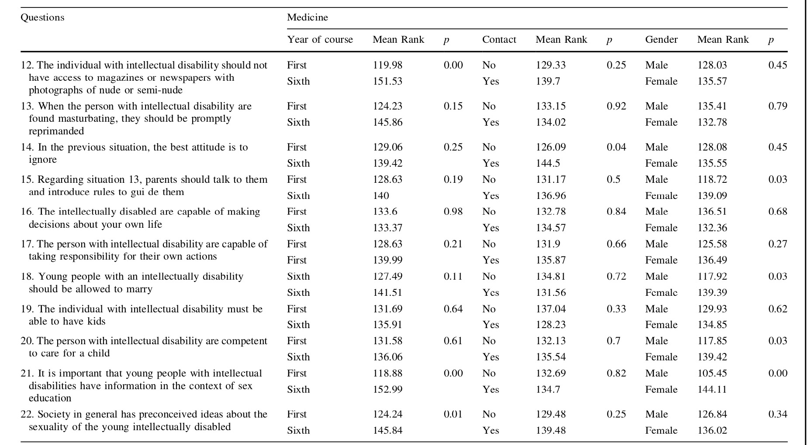
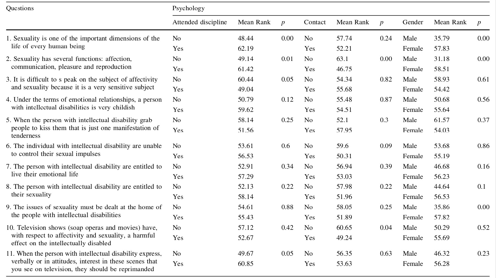
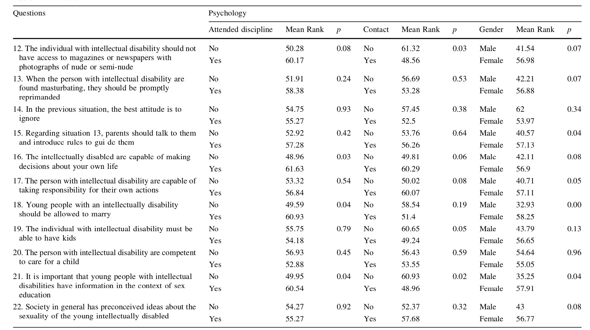
Concerning the variable "gender", from the answers to questions 15, 18, 20 and 21 it was resulted that it were female students who took a more positive attitude in the face of affectivity and sexuality of young people with intellectual disabilities.
While psychology students, that answered questions 1, 2, 11, 16, 18 and 21 and who had attended the subject IPSH, showed a more positive attitude than those who had not attended it. The opposite was found in question 3. Regarding the variable "frequent contact with the individuals with intellectual disability", resulted that students who do not have this contact had a more positive attitude on questions 2, 10, 12, 19 and 21 than those who have it.
Finally, with regard to gender, similarities are perceivable with what happens in medical school, since women have shown a much more positive attitude than men on questions 1, 2, 9, 15, 17, 18 and 21.
In order to establish comparisons between the attitudes of students of medicine, psychology and architecture, Kruskal–Wallis was used. This test determined whether there were differences in the distribution of the median response among the students of the three majors.
However, for statistically significant matters, it did not establish any hierarchy of attitudes between the majors, i.e. to determine which of them had a more negative attitude and which had a more positive one. This had been achieved by using the method of multiple comparisons, which allowed comparison between majors (Medicine vs. Architecture, Medicine vs. Psychology and Psychology vs. Architecture).
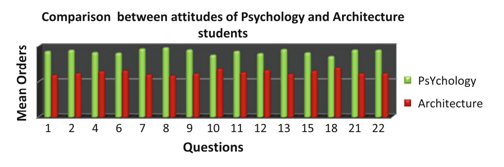
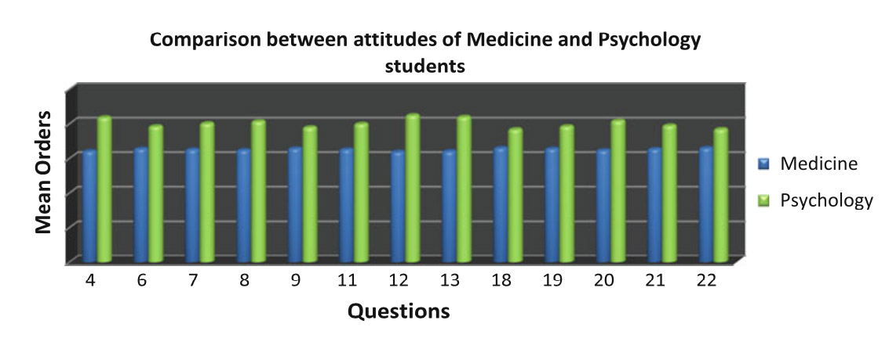
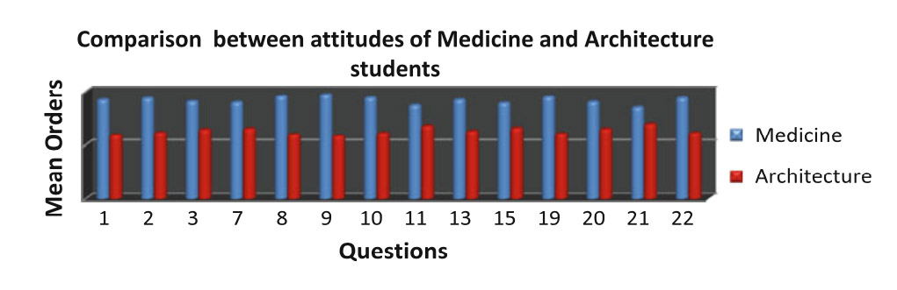
In Table 5 the variation in attitudes of students in different majors throughout the questionnaire may be observed by applying the Friedman test. There is no significant difference in attitude among students to the various questions. It was in questions 1, 2, 7, 9, 21 and 22 that students, regardless of their major, demonstrated a more positive attitude, while facing questions 3–5, 10, 16, 17, 19 and 20 they seemed to present a more negative one.
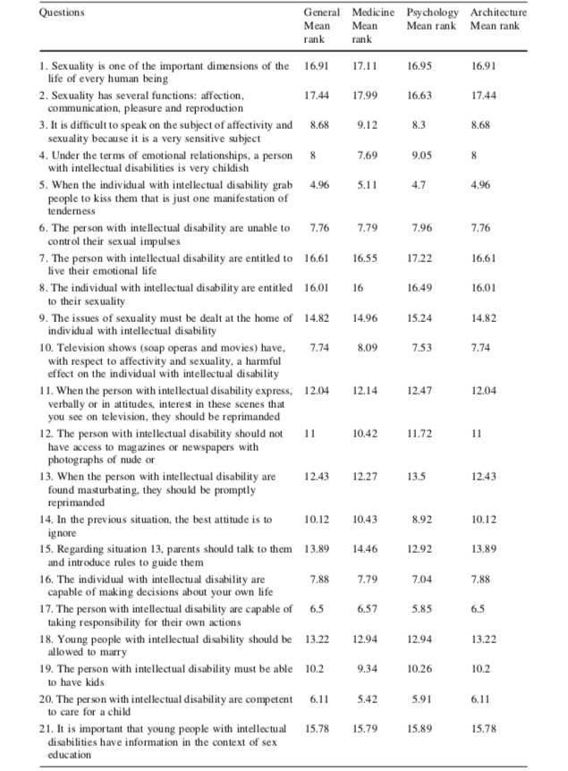
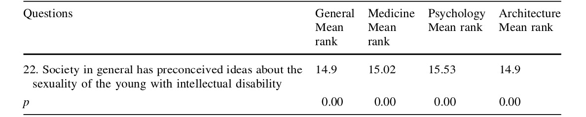
Discussion/Conclusion
Human sexuality is an area where, to a very large extent, aspects of biological, psychological and socio-cultural significance are intertwined and possess such influence that is determinant to attitudes and behaviors [19].
When comparing the variability of attitudes among students of three majors with regards to affectivity and sexuality of young people with intellectual disabilities, it was possible to gather that, when asked about the importance of sexuality in the life of every human being and to admit they had different roles in this a positive attitude. But when asked about the difficulty of tackling this issue, the attitude becomes less positive, with particular emphasis on female students. Thus, it is illustrated that in the "society we live in, the topic of sexuality is still surrounded by prejudice and discrimination." [2]
On the issues mentioned, the most positive attitude was demonstrated by the students of psychology, while the least positive was taken by the architecture students. According to Albuquerque and Ramos, "the social attitudes, shaped by prejudice, and also by ignorance, are reflected in a set of behaviors that deny some of the most elementary rights of persons with disabilities, especially with regard to their sexual and emotional aspect" [20].
By analyzing the variability of students' attitudes, the questionnaire showed that when asked about the right of the person with intellectual disability to their emotional and sex life, all students show a more positive attitude than the one described by the authors mentioned above. But when asked about the most objective demonstration of interest and curiosity about the issue of sexuality (questions 10–12), their approach becomes much less positive. It is the psychology students who take a more positive attitude while a less positive perspective is held by the architecture students. When we ask medicine and psychology students about more objective aspects of this theme, there are differences between those who have already acquired knowledge and those who have not yet done so.
The attitude was more positive in the latter group.
In that same issue, considering only the psychology major students, regarding the variable "frequent contact with the individual with intellectual disability", those with more frequent contact demonstrate a more negative attitude. This shows that despite the social and cultural changes that have occurred in relation to the topic of sexuality, making it (at least in theory) a legitimate right of all human beings, there are still no real changes happening in attitude for the group surveyed. The manifestations of sexuality are only to be considered normal and socially acceptable to the beautiful, the young, capable, healthy, and free of any disability.
Sexuality is also acceptable for people as long as it does not involve their grandparents, parents, children or siblings. Accepting the sexuality of those who are close to them is to accept their own condition of being sexual, and it seems that they are still far from being able to do so.
Felix and Marques argue that "the ban is affective-sexual behaviors to the population with disabilities; we are preventing them from satisfying basic needs for their growth and development as individuals. One of those needs is sexuality and this does not necessarily mean intercourse. It implies rather that we want, that we value. We feel important and useful because we have someone to share projects and anxieties." [9]
Glat [21] says that "teenagers with learning disabilities have the same problems as other young people, most of them have normal development of physical and psychological characteristics, and finally they receive little information about the functioning of [their] body". So when they take on a "far from normal sexual behavior, it usually arises from the way the individuals with intellectual disability have been treated and not due to disability". [22] Another author also states that the "needs and emotions of the persons with intellectual disability are equal to those of others. The perspective that they have higher or lower sex drives lacks biological foundation". [23] These are the two major contradictory myths that accompany their. According to one of them, they are described as a sexual beings, as children lacking sexual urges and desires who need to be protected and monitored for any social contact to develop. According to the other, they are perceived as being hypersexual without any control of their impulses that must be caught and punished [2, 24–28].
Comparing the different attitudes of the participants in the study reveals that when asked about the childishness of the individuals with intellectual disability in emotional relationships and on their ability to control impulses, students of the three majors showed a negative attitude. The less negative attitude was found among the psychology students. When asked about their emotional maturity, students of medicine and psychology who have already acquired knowledge regarding the mentality of the person with intellectual disability reflect a more positive attitude than those who have not acquired it. A similar phenomenon is manifested with the medical students when asked about the ability of person with intellectual disability control their impulses. One can infer that the degree of knowledge of students seems to be a determining factor in them, causing a more positive attitude in the face of affectivity and sexuality of the individual with intellectual disability.
Some researchers observed in their studies "greater acceptance of the practice of masturbation, thus reflecting a more liberal attitude in that area and people with intellectual disabilities are part of the group that benefited from this change" [29]. However, although the majority of the individuals who have mildly to moderately intellectual disability are aware of the concept of masturbation [30], and the prevalence of this practice in this population is high at 97% for those with an IQ over 50 and 80% for those of a lower IQ than 50 [31], the practice remains shrouded in controversy and discrimination. And this situation is illustrated by the fact that when "the individual with intellectual disability are caught either by parents or other caregivers in situations perceived as socially inappropriate, such as masturbation, they are severely reprimanded" [32].
By analyzing the different distributions of responses from the students of medicine, psychology and architecture regarding issues related to the masturbatory practices of the person with intellectual disabilities, one can observe a moderately positive attitude on the part of the three student groups. Hierarchically, again, psychology students were those who had the most positive attitude while the architecture students had the least.
Caregivers and society in general have been made aware to the right of the individual with intellectual disability has to live a normal life. "They have the right to live in society and the right to relate to whoever they want and however they wish". [33] Some recent studies have also shown that "relationships are [...] important aspects of life for the individual with intellectual disability" [34]. In addition to those fundamental rights "subjects are able often to make decisions about how to organize their lives and consider more appropriate taking into account their capabilities. While this capability exists, it exists also for the affective-sexual area. Suppress this fact; it will not make it disappear. By doing so, we become asexual people creating distress and often more anger and aggression. More importantly, we are limited human beings" [35].
And it is on these issues of responsibility, ability to marry and have children, and the ability of the person with intellectual disability to care for a child that those surveyed showed a less positive attitude. Even medicine and psychology students followed this pattern. This shows a society that insists on considering the person with intellectual dis- ability as individuals unable to hold themselves to any kind of responsibility.
When asked about the possibility of marrying an individual with intellectual disability, medicine students demonstrate a positive attitude. However, when asked about this person's ability to take care of a child, the attitude changes, becoming more negative. On both issues we notice a much more positive attitude in female students. Psychology students reflected a positive attitude about the ability of the person with intellectual disability being able to have children. A similar attitude was noticeable with women who previously had a more positive attitude to marriage. And the more positive attitude of women regarding marriage reflects a belief that already exists.
Regarding the variable "frequent contact with individual with intellectual disability" the Psychology students are, from those who do not have this frequent contact, the ones who had a more positive attitude to the possibility of what individual with intellectual disability will experience. Those individuals who live closest to people with intellectual disabilities tend to infantilize them and more vehemently tend to deny their right to expression of sexuality.
"What would happen if sex education programs were presented to the individual with intellectual disability? Would they have sex at the first opportunity? Would men become hypersexual without any control over their impulses? How about women? Would they start to breed compulsively?"" [36]. The person with intellectual disability need sex education more than anything else because they have no opportunity to learn and build their sexuality from friends, books or from watching behaviors [2, 8, 36–39]. They also need to be trained in social skills, particularly in how to show affection and love in a socially acceptable way and also learn to defend and protect themselves from sexually transmitted diseases, unwanted pregnancies and sexual abuse [2, 8, 36–39].
According to the questionnaire, when subjects were asked about the importance of sex education for the individual with intellectual disability, students of the three majors adopt a very positive attitude. This attitude is more evident with the psychology students and less with the architecture students. We also observed that as far as the medicine and psychology majors, "knowledge" and "females" variables go more positive attitudes were registered. It also appears that the psychology students with frequent contact with the individual with intellectual disability show a more negative attitude to the importance of sex education than those without such contact.
A common belief about the sexuality of the person with intellectual disability is that professionals who work with them, both in terms of rehabilitation or the different types of therapy and follow-up, have a more tolerant and understanding spirit. This belief has been refuted by several previous studies [26, 40]. However, it is necessary to take into account that these professionals have little academic training to achieve and deal with the sexuality of their patients [11, 41, 42]. The WHO even acknowledges that "the attitudes of health professionals can be a major obstacle to their role as educators and counselors on the topic of sexuality" [11].
Another interesting fact emerges from a study by Silveira in 1993 [12], which evaluated the degree of knowledge about sexuality among medical and engineering students and it was found that both have similar levels of knowledge at the end of their academic studies. This finding is quite surprising, as health professionals should be trained to assist individuals in a holistic manner, including tending to their sexuality.
One can therefore conclude that the vast majority of students surveyed consider sexuality an important part of the life of every human being and recognize their many functions, but they lack training to be better able to deal with this issue.
From the responses to the questionnaire, psychology students were those with a more positive attitude towards sexuality and affectivity of the individual with intellectual disability, but the variability of the distribution of student responses from the three majors did not differ significantly. A positive attitude is characteristic of those who have acquired sufficient knowledge, females and of those who have frequent contact with individuals with intellectual disability.